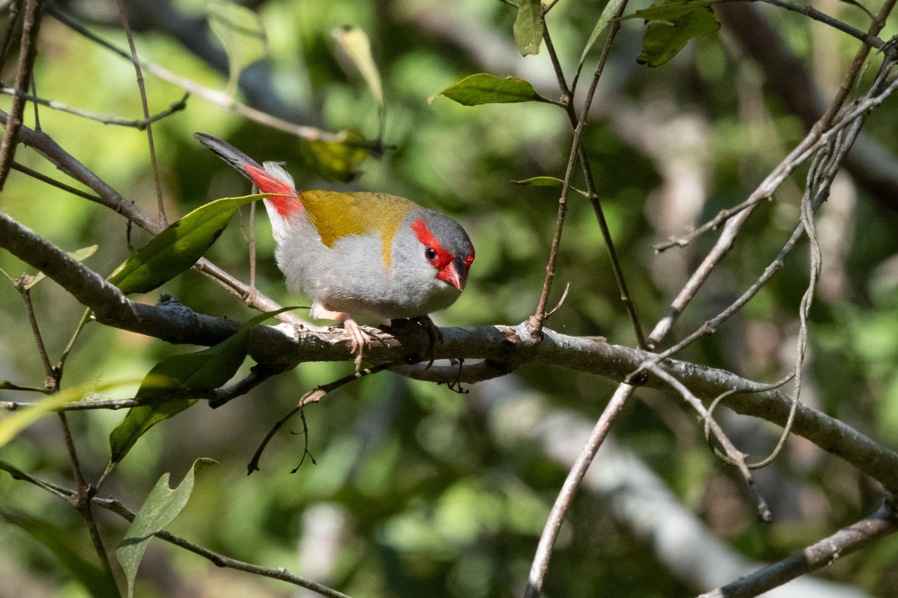

The Red-browed Finch is a small and colourful Australian finch with a bright red eyebrow, red bill and red rump contrasting with olive-green and grey plumage. It is commonly found in grassy areas near woodland, forest edges, wetlands, farmland and gardens in eastern and southeastern Australia. Red-browed Finches are social birds and usually occur in pairs or small groups, often feeding together on the ground. They eat mainly seeds and may also take insects and other small food items. Their attractive plumage and active behaviour make them a familiar finch in suitable habitats.
Red-browed Finch is best separated from Double-barred Finch by looking at the overall shape and the strongest plumage pattern rather than one small mark. Compared with Double-barred Finch, it has a different combination of colour, proportions and typical behaviour, which becomes clearer when the whole bird is visible. Chestnut-breasted Mannikin can also resemble it in some settings, but differences in bill shape, tail length, wing pattern, posture or habitat can help narrow the identification. Calls and behaviour are useful supporting clues when plumage is difficult to see, especially for birds that spend much of their time in dense vegetation. Using several features together is more reliable than identifying the bird from a single characteristic.
IOC World Bird List v15.2 — taxonomy and nomenclature, IUCN Red List of Threatened Species — global conservation status, BirdLife International — species distribution, ecology and conservation, eBird / Cornell Lab of Ornithology — identification and life-history information